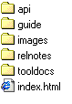
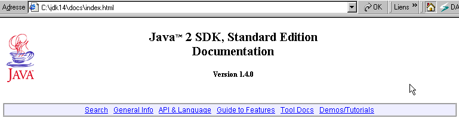
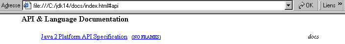
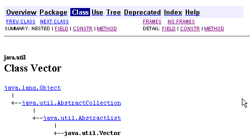

4. Classes d'usage courant
Nous présentons dans ce chapitre un certain nombre de classes Java d'usage courant. Celles-ci ont de nombreux attributs, méthodes et constructeurs. A chaque fois, nous ne présentons qu'une faible partie des classes. Le détail de celles-ci est disponible dans l'aide de Java que nous présentons maintenant.
4.1. La documentation
Si vous avez installé le JDK de Sun dans le dossier <jdk>, la documentation est disponible dans le dossier <jdk>\docs :

Quelquefois on a un jdk mais sans documentation. Celle-ci peut être trouvée sur le site de Sun http://www.sun.com. Dans le dossier docs on trouve un fichier index.html qui est le point de départ de l'aide du JDK :


Le lien API & Language ci-dessus donne accès aux classes Java. Le lien Demos/Tutorials est particulièrement utile pour avoir des exemples de programmes Java. Suivons le lien API & Language :

Suivons le lien Java 2 Platform API :

Cette page est le véritable point de départ de la documentation sur les classes. On pourra créer un raccourci dessus pour y avoir un accès rapide. L'URL est <jdk>\docs\api\index.html. On y trouve des liens sur les centaines de classes Java du JDK. Lorsqu'on débute, la principale difficulté est de savoir ce que font ces différentes classes. Dans un premier temps, cette aide n'a donc d'intérêt que si on connaît le nom de la classe sur laquelle on veut des informations. On peut aussi se laisser guider par les noms des classes qui indiquent normalement le rôle de la classe.
Prenons un exemple et cherchons des informations sur la classe Vector qui implémente un tableau dynamique. Il suffit de chercher dans la liste des classes du cadre de gauche le lien de la classe Vector :

et de cliquer sur le lien pour avoir la définition de la classe :

On y trouve
- la hiérarchie dans laquelle se trouve la classe, ici java.util.Vector
- la liste des champs (attributs) de la classe
- la liste des constructeurs
- la liste des méthodes
Par la suite, nous présentons diverses classes. Nous invitons le lecteur à systématiquement vérifier la définition complète des classes utilisées.
4.2. Les classes de test
Les exemples qui suivent utilisent parfois les classes personne, enseignant. Nous rappelons ici leur définition.
public class personne{
// nom, prénom, âge
private String prenom;
private String nom;
private int age;
// constructeur 1
public personne(String P, String N, int age){
this.prenom=P;
this.nom=N;
this.age=age;
}
// constructeur 2
public personne(personne P){
this.prenom=P.prenom;
this.nom=P.nom;
this.age=P.age;
}
// toString
public String toString(){
return "personne("+prenom+","+nom+","+age+")";
}
// accesseurs
public String getPrenom(){
return prenom;
}
public String getNom(){
return nom;
}
public int getAge(){
return age;
}
//modifieurs
public void setPrenom(String P){
this.prenom=P;
}
public void setNom(String N){
this.nom=N;
}
public void setAge(int age){
this.age=age;
}
}
La classe enseignant est dérivée de la classe personne et est définie comme suit :
class enseignant extends personne{
// attributs
private int section;
// constructeur
public enseignant(String P, String N, int age,int section){
super(P,N,age);
this.section=section;
}
// toString
public String toString(){
return "etudiant("+super.toString()+","+section+")";
}
}
Nous utiliserons également une classe etudiant dérivée de la classe personne et définie comme suit :
class etudiant extends personne{
String numero;
public etudiant(String P, String N, int age,String numero){
super(P,N,age);
this.numero=numero;
}
public String toString(){
return "etudiant("+super.toString()+","+numero+")";
}
}
4.3. La classe String
La classe String représente les chaînes de caractères. Soit nom une variable chaîne de caractères :
*String nom;*
nom est un référence d'un objet encore non initialisé. On peut l'initialiser de deux façons :
**nom="cheval"** ou **nom=new String("cheval")**
Les deux méthodes sont équivalentes. Si on écrit plus tard nom="poisson", nom référence alors un nouvel objet. L'ancien objet String("cheval") est perdu et la place mémoire qu'il occupait sera récupérée.
La classe String est riche d'attributs et méthodes. En voici quelques-uns :
public char charAt(int i) | donne le caractère i de la chaîne, le premier caractère ayant l'indice 0. Ainsi String("cheval").charAt(3) est égal à 'v' |
public int compareTo(chaine2) | chaine1.compareTo(chaine2) compare chaine1 à chaine2 et rend 0 si chaine1=chaine2, 1 su chaine1>chaine2, -1 si chaine1<chaine2 |
public boolean equals(Object anObject) | chaine1.equals(chaine2) rend vrai si chaine1=chaine2, faux sinon |
public String toLowerCase() | chaine1.toLowerCase() rend chaine1 en minuscules |
public String toUpperCase() | chaine1.toUpperCase() rend chaine1 en majuscules |
public String trim() | chaine1.trim() rend chaine1 débarassée de ses espaces de début et de fin |
public String substring(int beginIndex, int endIndex) | String("chapeau").subString(2,4) rend la chaîne "ape" |
public char[] toCharArray() | permet de mettre les caractères de la chaîne dans un tableau de caractères |
int length() | nombre de caractères de la chaîne |
int indexOf(String chaine2) | rend la première position de chaine2 dans la chaîne courante ou -1 si chaine2 n'est pas présente |
int indexOf(String chaine2, int startIndex) | rend la première position de chaine2 dans la chaîne courante ou -1 si chaine2 n'est pas présente. La recherche commence à partir du caractère n° startIndex. |
int lastIndexOf(String chaine2) | rend la dernière position de chaine2 dans la chaîne courante ou -1 si chaine2 n'est pas présente |
boolean startsWith(String chaine2) | rend vrai si la chaîne courante commence par chaine2 |
boolean endsWith(String chaine2) | rend vrai si la chaîne courante finit par chaine2 |
boolean matches(String regex) | rend vrai si la chaîne courante correspond à l'expression régulière regex. |
String[] split(String regex) | La chaîne courante est composée de champs séparés par une chaîne de caractères modélisée par l'expression régulière regex. La méthode split permet de récupérer les champs dans un tableau. |
String replace(char oldChar, char newChar) | remplace dans la chaîne courante le caractère oldChar par le caractère newChar. |
Voici un programme d'exemple :
// imports
import java.io.*;
public class string1{
// une classe de démonstration
public static void main(String[] args){
String uneChaine="l'oiseau vole au-dessus des nuages";
affiche("uneChaine="+uneChaine);
affiche("uneChaine.Length="+uneChaine.length());
affiche("chaine[10]="+uneChaine.charAt(10));
affiche("uneChaine.IndexOf(\"vole\")="+uneChaine.indexOf("vole"));
affiche("uneChaine.IndexOf(\"x\")="+uneChaine.indexOf("x"));
affiche("uneChaine.LastIndexOf('a')="+uneChaine.lastIndexOf('a'));
affiche("uneChaine.LastIndexOf('x')="+uneChaine.lastIndexOf('x'));
affiche("uneChaine.substring(4,7)="+uneChaine.substring(4,7));
affiche("uneChaine.ToUpper()="+uneChaine.toUpperCase());
affiche("uneChaine.ToLower()="+uneChaine.toLowerCase());
affiche("uneChaine.Replace('a','A')="+uneChaine.replace('a','A'));
String[] champs=uneChaine.split("\\s+");
for (int i=0;i<champs.length;i++){
affiche("champs["+i+"]=["+champs[i]+"]");
}//for
affiche("(\" abc \").trim()=["+" abc ".trim()+"]");
}//Main
// affiche
public static void affiche(String msg){
// affiche msg
System.out.println(msg);
}//affiche
}//classe
et les résultats obtenus :
uneChaine=l'oiseau vole au-dessus des nuages
uneChaine.Length=34
chaine[10]=o
uneChaine.IndexOf("vole")=9
uneChaine.IndexOf("x")=-1
uneChaine.LastIndexOf('a')=30
uneChaine.LastIndexOf('x')=-1
uneChaine.substring(4,7)=sea
uneChaine.ToUpper()=L'OISEAU VOLE AU-DESSUS DES NUAGES
uneChaine.ToLower()=l'oiseau vole au-dessus des nuages
uneChaine.Replace('a','A')=l'oiseAu vole Au-dessus des nuAges
champs[0]=[l'oiseau]
champs[1]=[vole]
champs[2]=[au-dessus]
champs[3]=[des]
champs[4]=[nuages]
(" abc ").trim()=[abc]
4.4. La classe Vector
Un vecteur est un tableau dynamique dont les éléments sont des références d'objets. C'est donc un tableau d'objets dont la taille peut varier au fil du temps ce qui n'est pas possible avec les tableaux statiques qu'on a rencontrés jusqu'ici. Voici certains champs, constructeurs ou méthodes de cette classe :
public Vector() | construit un vecteur vide |
public final int size() | nombre d'élément du vecteur |
public final void addElement(Object obj) | ajoute l'objet référencé par obj au vecteur |
public final Object elementAt(int index) | référence de l'objet n° index du vecteur - les indices commencent à 0 |
public final Enumeration elements() | l'ensemble des éléments du vecteur sous forme d'énumération |
public final Object firstElement() | référence du premier élément du vecteur |
public final Object lastElement() | référence du dernier élément du vecteur |
public final boolean isEmpty() | rend vrai si le vecteur est vide |
public final void removeElementAt(int index) | enlève l'élément d'indice index |
public final void removeAllElements() | vide le vecteur de tous ses éléments |
public final String toString() | rend une chaîne d'identification du vecteur |
Voici un programme de test :
// les classes importées
import java.util.*;
public class test1{
// le programme principal main - static - méthode de classe
public static void main(String arg[]){
// la création des objets instances de classes
personne p=new personne("Jean","Dupont",30);
enseignant en=new enseignant("Paula","Hanson",56,27);
etudiant et=new etudiant("Chris","Garot",22,"19980405");
System.out.println("p="+p.toString());
System.out.println("en="+en.toString());
System.out.println("et="+et.toString());
// le polymorphisme
personne p2=(personne)en;
System.out.println("p2="+p2.toString());
personne p3=(personne)et;
System.out.println("p3="+p3.toString());
// un vecteur
Vector V=new Vector();
V.addElement(p);V.addElement(en);V.addElement(et);
System.out.println("Taille du vecteur V = "+V.size());
for(int i=0;i<V.size();i++){
p2=(personne) V.elementAt(i);
System.out.println("V["+i+"]="+p2.toString());
}
} // fin main
}// fin classe
Compilons ce programme :
E:\data\serge\JAVA\poly juin 2002\Chapitre 3\vector>dir
10/06/2002 10:41 1 134 personne.class
10/06/2002 10:41 619 enseignant.class
10/06/2002 10:41 610 etudiant.class
10/06/2002 10:42 1 035 test1.java
E:\data\serge\JAVA\poly juin 2002\Chapitre 3\vector>javac test1.java
E:\data\serge\JAVA\poly juin 2002\Chapitre 3\vector>dir
10/06/2002 10:41 1 134 personne.class
10/06/2002 10:41 619 enseignant.class
10/06/2002 10:41 610 etudiant.class
10/06/2002 10:42 1 035 test1.java
10/06/2002 10:43 1 506 test1.class
Exécutons le fichier test1.class :
E:\data\serge\JAVA\poly juin 2002\Chapitre 3\vector>java test1
p=personne(Jean,Dupont,30)
en=etudiant(personne(Paula,Hanson,56),27)
et=etudiant(personne(Chris,Garot,22),19980405)
p2=etudiant(personne(Paula,Hanson,56),27)
p3=etudiant(personne(Chris,Garot,22),19980405)
Taille du vecteur V = 3
V[0]=personne(Jean,Dupont,30)
V[1]=etudiant(personne(Paula,Hanson,56),27)
V[2]=etudiant(personne(Chris,Garot,22),19980405)
Par la suite, nous ne répéterons plus le processus de compilation et d'exécution des programmes de tests. Il suffit de reproduire ce qui a été fait ci-dessus.
4.5. La classe ArrayList
La classe ArrayList est analogue à la classe Vector. Elle n'en diffère essentiellement que lorsque elle est utilisée simultanément par plusieurs threads d'exécution. Les méthodes de synchronisation des threads pour l'accès à un Vector ou un ArrayList diffèrent. En-dehors de ce cas, on peut utiliser indifféremment l'un ou l'autre. Voici certains champs, constructeurs ou méthodesde cette classe :
ArrayList() | construit un tableau vide |
int size() | nombre d'élément du tableau |
void add(Object obj) | ajoute l'objet référencé par obj au tableau |
void add(int index,Object obj) | ajoute l'objet référencé par obj au tableau en position index |
Object get(int index) | référence de l'objet n° index du tableau - les indices commencent à 0 |
boolean isEmpty() | rend vrai si le tableau est vide |
void remove(int index) | enlève l'élément d'indice index |
void clear() | vide le tableau de tous ses éléments |
Object[] toArray() | met le tableau dynamique dans un tableau classique |
String toString() | rend une chaîne d'identification du tableau |
Voici un programme de test :
// les classes importées
import java.util.*;
public class test1{
// le programme principal main - static - méthode de classe
public static void main(String arg[]){
// la création des objets instances de classes
personne p=new personne("Jean","Dupont",30);
enseignant en=new enseignant("Paula","Hanson",56,27);
etudiant et=new etudiant("Chris","Garot",22,"19980405");
System.out.println("p="+p);
System.out.println("en="+en);
System.out.println("et="+et);
// le polymorphisme
personne p2=(personne)en;
System.out.println("p2="+p2);
personne p3=(personne)et;
System.out.println("p3="+p3);
// un vecteur
ArrayList personnes=new ArrayList();
personnes.add(p);personnes.add(en);personnes.add(et);
System.out.println("Nombre de personnes = "+personnes.size());
for(int i=0;i<personnes.size();i++){
p2=(personne) personnes.get(i);
System.out.println("personnes["+i+"]="+p2);
}
} // fin main
}// fin classe
Les résultats obtenus sont les mêmes que précédemment.
4.6. La classe Arrays
La classe java.util.Arrays donne accès à des méthodes statiques permettant différentes opérations sur les tableaux en particulier les tris et les recherches d'éléments. En voici quelques méthodes ;
static void sort(tableau) | trie tableau en utilisant pour cela l'ordre implicite du type de données du tableau, nombre ou chaînes de caractères. |
static void sort (Object[] tableau, Comparator C) | trie trie tableau en utilisant pour comparer les éléments la fonction de comparaison C |
static int binarySearch(tableau,élément) | rend la position de élément dans tableau ou une valeur <0 sinon. Le tableau doit être auparavant trié. |
static int binarySearch(Object[] tableau,Object élément, Comparator C) | idem mais utilise la fonction de comparaison C pour comparer deux éléments du tableau. |
Voici un premier exemple :
import java.util.*;
public class sort2 implements Comparator{
// une classe privée interne
private class personne{
private String nom;
private int age;
public personne(String nom, int age){
this.nom=nom; // nom de la personne
this.age=age; // son âge
}
// récupérer l'âge
public int getAge(){
return age;
}
// identité de la personne
public String toString(){
return ("["+nom+","+age+"]");
}
}; // classe personne
// constructeur
public sort2() {
// un tableau de personnes
personne[] amis=new personne[]{new personne("tintin",100),new personne("milou",80),
new personne("tournesol",40)};
// tri du tableau de personnes
Arrays.sort(amis,this);
// vérification
for(int i=0;i<3;i++)
System.out.println(amis[i]);
}//constructeur
// la fonction qui compare des personnes
public int compare(Object o1, Object o2){
// doit rendre
// -1 si o1 "plus petit que" o2
// 0 si o1 "égal à" o2
// +1 si o1 "plus grand que" o2
personne p1=(personne)o1;
personne p2=(personne)o2;
int age1=p1.getAge();
int age2=p2.getAge();
if(age1<age2) return (-1);
else if (age1==age2) return (0);
else return +1;
}//compare
// fonction de test
public static void main(String[] arg){
new sort2();
}//main
}//classe
Examinons ce programme. La fonction main crée un objet sort2. Le constructeur de la classe sort2 est le suivant :
// constructeur
public sort2() {
// un tableau de personnes
personne[] amis=new personne[]{new personne("tintin",100),new personne("milou",80),
new personne("tournesol",40)};
// tri du tableau de personnes
Arrays.sort(amis,this);
// vérification
for(int i=0;i<3;i++)
System.out.println(amis[i]);
}//constructeur
Le tableau à trier est un tableau d'objets personne. La classe personne est définie de façon privée (private) à l'intérieur de la classe sort2. La méthode statique sort de la classe Arrays ne sait pas comment trier un tableau d'objets personne, aussi est-on obligé ici d'utiliser la forme void sort(Object[] obj, Comparator C). Comparator est une interface ne définissant qu'une méthode :
et qui doit rendre 0 : si o1=o2, -1 : si o1<02, +1 : si o1>o2. Dans le prototype void sort(Object[] obj, Comparator C) le second argument C doit être un objet implémentant l'interface Comparator. Dans le constructeur sort2, on a choisi l'objet courant this :
Ceci nous oblige à faire deux choses :
- indiquer que la classe sort2 implémente l'interface Comparator
```csharp
public class sort2 implements Comparator{
```
- écrire la fonction compare dans la classe sort2.
Celle-ci est la suivante :
// la fonction qui compare des personnes
public int compare(Object o1, Object o2){
// doit rendre
// -1 si o1 "plus petit que" o2
// 0 si o1 "égal à" o2
// +1 si o1 "plus grand que" o2
personne p1=(personne)o1;
personne p2=(personne)o2;
int age1=p1.getAge();
int age2=p2.getAge();
if(age1<age2) return (-1);
else if (age1==age2) return (0);
else return +1;
}//compare
Pour comparer deux objets personne, on utilise ici l'âge (on aurait pu utiliser le nom).
Les résultats de l'exécution sont les suivants :
On aurait pu procéder différemment pour mettre en œuvre l'interface Comparator :
import java.util.*;
public class sort2 {
// une classe privée interne
private class personne{
…….
}; // classe personne
// constructeur
public sort2() {
// un tableau de personnes
personne[] amis=new personne[]{new personne("tintin",100),new personne("milou",80),
new personne("tournesol",40)};
// tri du tableau de personnes
Arrays.sort(amis,
new java.util.Comparator(){
public int compare(Object o1, Object o2){
return compare1(o1,o2);
}//compare
}//classe
);
// vérification
for(int i=0;i<3;i++)
System.out.println(amis[i]);
}//constructeur
// la fonction qui compare des personnes
public int compare1(Object o1, Object o2){
// doit rendre
// -1 si o1 "plus petit que" o2
// 0 si o1 "égal à" o2
// +1 si o1 "plus grand que" o2
personne p1=(personne)o1;
personne p2=(personne)o2;
int age1=p1.getAge();
int age2=p2.getAge();
if(age1<age2) return (-1);
else if (age1==age2) return (0);
else return +1;
}//compare1
// main
public static void main(String[] arg){
new sort2();
}//main
}//classe
L'instruction de tri est devenue la suivante :
// tri du tableau de personnes
Arrays.sort(amis,
new java.util.Comparator(){
public int compare(Object o1, Object o2){
return compare1(o1,o2);
}//compare
}//classe
);
Le second paramètre de la méthode sort doit être un objet implémentant l'interface Comparator. Ici nous créons un tel objet par new java.util.Comparator() et le texte qui suit {….} définit la classe dont on crée un objet. On appelle cela une classe anonyme car elle ne porte pas de nom. Dans cette classe anonyme qui doit implémenter l'interface Comparator, on définit la méthode compare de cette interface. Celle-ci se contente d'appeler la méthode compare1 de la classe sort2. On est alors ramené au cas précédent.
La classe sort2 n'implémente plus l'interface Comparator. Aussi sa déclaration devient-elle :
Maintenant nous testons la méthode binarySearch de la classe Arrays sur l'exemple suivant :
import java.util.*;
public class sort4 {
// une classe privée interne
private class personne{
// attributs
private String nom;
private int age;
// constructeur
public personne(String nom, int age){
this.nom=nom; // nom de la personne
this.age=age; // son âge
}
// récupérer le nom
public String getNom(){
return nom;
}
// récupérer l'âge
public int getAge(){
return age;
}
// identité de la personne
public String toString(){
return ("["+nom+","+age+"]");
}
}; // classe personne
// constructeur
public sort4() {
// un tableau de personnes
personne[] amis=new personne[]{new personne("tintin",100),new personne("milou",80),
new personne("tournesol",40)};
// des comparateurs
java.util.Comparator comparateur1=
new java.util.Comparator(){
public int compare(Object o1, Object o2){
return compare1(o1,o2);
}//compare
}//classe
;
java.util.Comparator comparateur2=
new java.util.Comparator(){
public int compare(Object o1, Object o2){
return compare2(o1,o2);
}//compare
}//classe
;
// tri du tableau de personnes
Arrays.sort(amis,comparateur1);
// vérification
for(int i=0;i<3;i++)
System.out.println(amis[i]);
// recherches
cherche("milou",amis,comparateur2);
cherche("xx",amis,comparateur2);
}//constructeur
// la fonction qui compare des personnes
public int compare1(Object o1, Object o2){
// doit rendre
// -1 si o1 "plus petit que" o2
// 0 si o1 "égal à" o2
// +1 si o1 "plus grand que" o2
personne p1=(personne)o1;
personne p2=(personne)o2;
int age1=p1.getAge();
int age2=p2.getAge();
if(age1<age2) return (-1);
else if (age1==age2) return (0);
else return +1;
}//compare1
// la fonction qui compare une personne à un nom
public int compare2(Object o1, Object o2){
// o1 est une personne
// o2 est un String, le nom nom2 d'une personne
// doit rendre
// -1 si o1.nom "plus petit que" nom2
// 0 si o1.nom "égal à" nom2
// +1 si o1.nom "plus grand que" nom2
personne p1=(personne)o1;
String nom1=p1.getNom();
String nom2=(String)o2;
return nom1.compareTo(nom2);
}//compare2
public void cherche(String ami,personne[] amis, Comparator comparateur){
// recherche ami dans le tableau amis
int position=Arrays.binarySearch(amis,ami,comparateur);
// trouvé ?
if(position>=0)
System.out.println(ami + " a " + amis[position].getAge() + " ans");
else System.out.println(ami + " n'existe pas dans le tableau");
}//cherche
// main
public static void main(String[] arg){
new sort4();
}//main
}//classe
Ici, nous avons procédé un peu différemment des exemples précédents. Les deux objets Comparator nécessaires aux méthodes sort et binarySearch ont été créés et affectés aux variables comparateur1 et comparateur2.
// des comparateurs
java.util.Comparator comparateur1=
new java.util.Comparator(){
public int compare(Object o1, Object o2){
return compare1(o1,o2);
}//compare
}//classe
;
java.util.Comparator comparateur2=
new java.util.Comparator(){
public int compare(Object o1, Object o2){
return compare2(o1,o2);
}//compare
}//classe
;
Une recherche dichotomique sur le tableau amis est faite deux fois dans le constructeur de sort4 :
La méthode cherche reçoit tous les paramètres dont elle a besoin pour appeler la méthode binarySearch :
public void cherche(String ami,personne[] amis, Comparator comparateur){
// recherche ami dans le tableau amis
int position=Arrays.binarySearch(amis,ami,comparateur);
// trouvé ?
if(position>=0)
System.out.println(ami + " a " + amis[position].getAge() + " ans");
else System.out.println(ami + " n'existe pas dans le tableau");
}//cherche
La méthode binarySearch travaille avec le comparateur comparateur2 qui lui-même fait appel à la méthode compare2 de la classe sort4. La méthode rend la position du nom cherché dans le tableau s'il existe ou un nombre <0 sinon. La méthode compare2 sert à comparer un objet personne à un nom de type String.
// la fonction qui compare une personne à un nom
public int compare2(Object o1, Object o2){
// o1 est une personne
// o2 est un String, le nom nom2 d'une personne
// doit rendre
// -1 si o1.nom "plus petit que" nom2
// 0 si o1.nom "égal à" nom2
// +1 si o1.nom "plus grand que" nom2
personne p1=(personne)o1;
String nom1=p1.getNom();
String nom2=(String)o2;
return nom1.compareTo(nom2);
}//compare2
Contrairement à la méthode sort, la méthode binarySearch ne reçoit pas deux objets personne, mais un objet personne et un objet String dans cet ordre. Le 1er paramètre est un élément du ableau amis, le second le nom de la personne cherchée.
4.7. La classe Enumeration
Enumeration est une interface et non une classe. Elle a les méthodes suivantes :
public abstract boolean hasMoreElements() | rend vrai si l'énumération a encore des éléments |
public abstract Object nextElement() | rend la référence de l'élément suivant de l'énumération |
Comment exploite-t-on une énumération ? En général comme ceci :
Enumeration e=… // on récupère un objet enumeration
while(e.hasMoreElements()){
// exploiter l'élément e.nextElement()
}
Voici un exemple :
// les classes importées
import java.util.*;
public class test1{
// le programme principal main - static - méthode de classe
public static void main(String arg[]){
// la création des objets instances de classes
personne p=new personne("Jean","Dupont",30);
enseignant en=new enseignant("Paula","Hanson",56,27);
etudiant et=new etudiant("Chris","Garot",22,"19980405");
System.out.println("p="+p.toString());
System.out.println("en="+en.toString());
System.out.println("et="+et.toString());
// le polymorphisme
personne p2=(personne)en;
System.out.println("p2="+p2.toString());
personne p3=(personne)et;
System.out.println("p3="+p3.toString());
// un vecteur
Vector V=new Vector();
V.addElement(p);V.addElement(en);V.addElement(et);
System.out.println("Taille du vecteur V = "+V.size());
int i;
for(i=0;i<V.size();i++){
p2=(personne) V.elementAt(i);
System.out.println("V["+i+"]="+p2.toString());
}
// une énumération
Enumeration E=V.elements();
i=0;
while(E.hasMoreElements()){
p2=(personne) E.nextElement();
System.out.println("V["+i+"]="+p2.toString());
i++;
}
}// fin main
}//fin classe
On obtient les résultats suivants :
p=personne(Jean,Dupont,30)
en=enseignant(personne(Paula,Hanson,56),27)
et=etudiant(personne(Chris,Garot,22),19980405)
p2=enseignant(personne(Paula,Hanson,56),27)
p3=etudiant(personne(Chris,Garot,22),19980405)
Taille du vecteur V = 3
V[0]=personne(Jean,Dupont,30)
V[1]=enseignant(personne(Paula,Hanson,56),27)
V[2]=etudiant(personne(Chris,Garot,22),19980405)
V[0]=personne(Jean,Dupont,30)
V[1]=enseignant(personne(Paula,Hanson,56),27)
V[2]=etudiant(personne(Chris,Garot,22),19980405)
4.8. La classe Hashtable
La classe Hashtable permet d'implémenter un dictionnaire. On peut voir un dictionnaire comme un tableau à deux colonnes :
clé | valeur |
clé1 | valeur1 |
clé2 | valeur2 |
.. | ... |
Les clés sont uniques, c.a.d. qu'il ne peut y avoir deux clés identiques. Les méthodes et propriétés principales de la classe Hashtable sont les suivantes :
public Hashtable() | constructeur - construit un dictionnaire vide |
public int size() | nombre d'éléments dans le dictionnaire - un élément étant une paire (clé, valeur) |
public Object put(Object key, Object value) | ajoute la paire (key, value) au dictionnaire |
public Object get(Object key) | récupère l'objet associé à la clé key ou null si la clé key n'existe pas |
public boolean containsKey(Object key) | vrai si la clé key existe dans le dictionnaire |
public boolean contains(Object value) | vrai si la valeur value existe dans le dictionnaire |
public Enumeration keys() | rend les clés du dictionnaire sous forme d'énumération |
public Object remove(Object key) | enlève la paire (clé, valeur) où clé=key |
public String toString() | identifie le dictionnaire |
Voici un exemple :
// les classes importées
import java.util.*;
public class test1{
// le programme principal main - static - méthode de classe
public static void main(String arg[]){
// la création des objets instances de classes
personne p=new personne("Jean","Dupont",30);
enseignant en=new enseignant("Paula","Hanson",56,27);
etudiant et=new etudiant("Chris","Garot",22,"19980405");
System.out.println("p="+p.toString());
System.out.println("en="+en.toString());
System.out.println("et="+et.toString());
// le polymorphisme
personne p2=(personne)en;
System.out.println("p2="+p2.toString());
personne p3=(personne)et;
System.out.println("p3="+p3.toString());
// un dictionnaire
Hashtable H=new Hashtable();
H.put("personne1",p);
H.put("personne2",en);
H.put("personne3",et);
Enumeration E=H.keys();
int i=0;
String cle;
while(E.hasMoreElements()){
cle=(String) E.nextElement();
p2=(personne) H.get(cle);
System.out.println("clé "+i+"="+cle+" valeur="+p2.toString());
i++;
}
}//fin main
}//fin classe
Les résultats obtenus sont les suivants :
p=personne(Jean,Dupont,30)
en=enseignant(personne(Paula,Hanson,56),27)
et=etudiant(personne(Chris,Garot,22),19980405)
p2=enseignant(personne(Paula,Hanson,56),27)
p3=etudiant(personne(Chris,Garot,22),19980405)
clé 0=personne3 valeur=etudiant(personne(Chris,Garot,22),19980405)
clé 1=personne2 valeur=enseignant(personne(Paula,Hanson,56),27)
clé 2=personne1 valeur=personne(Jean,Dupont,30)
4.9. Les fichiers texte
4.9.1. Ecrire
Pour écrire dans un fichier, il faut disposer d'un flux d'écriture. On peut utiliser pour cela la classe FileWriter. Les constructeurs souvent utilisés sont les suivants :
FileWriter(String fileName) | crée le fichier de nom fileName - on peut ensuite écrire dedans - un éventuel fichier de même nom est écrasé |
FileWriter(String fileName, boolean append) | idem - un éventuel fichier de même nom peut être utilisé en l'ouvrant en mode ajout (append=true) |
La classe FileWriter offre un certain nombre de méthodes pour écrire dans un fichier, méthodes héritées de la classe Writer. Pour écrire dans un fichier texte, il est préférable d'utiliser la classe PrintWriter dont les constructeurs souvent utilisés sont les suivants :
PrintWriter(Writer out) | l'argument est de type Writer, c.a.d. un flux d'écriture (dans un fichier, sur le réseau, …) |
PrintWriter(Writer out, boolean autoflush) | idem. Le second argument gère la bufferisation des lignes. Lorsqu'il est à faux (son défaut), les lignes écrites sur le fichier transitent par un buffer en mémoire. Lorsque celui-ci est plein, il est écrit dans le fichier. Cela améliore les accès disque. Ceci-dit quelquefois, ce comportement est indésirable, notamment lorsqu'on écrit sur le réseau. |
Les méthodes utiles de la classe PrintWriter sont les suivantes :
void print(Type T) | écrit la donnée T (String, int, ….) |
void println(Type T) | idem en terminant par une marque de fin de ligne |
void flush() | vide le buffer si on n'est pas en mode autoflush |
void close() | ferme le flux d'écriture |
Voici un programme qui écrit quelques lignes dans un fichier texte :
// imports
import java.io.*;
public class ecrire{
public static void main(String[] arg){
// ouverture du fichier
PrintWriter fic=null;
try{
fic=new PrintWriter(new FileWriter("out"));
} catch (Exception e){
Erreur(e,1);
}
// écriture dans le fichier
try{
fic.println("Jean,Dupont,27");
fic.println("Pauline,Garcia,24");
fic.println("Gilles,Dumond,56");
} catch (Exception e){
Erreur(e,3);
}
// fermeture du fichier
try{
fic.close();
} catch (Exception e){
Erreur(e,2);
}
}// fin main
private static void Erreur(Exception e, int code){
System.err.println("Erreur : "+e);
System.exit(code);
}//Erreur
}//classe
Le fichier out obtenu à l'exécution est le suivant :
4.9.2. Lire
Pour lire le contenu d'un fichier, il faut disposer d'un flux de lecture associé au fichier. On peut utiliser pour cela la classe FileReader et le constructeur suivant :
FileReader(String nomFichier) | ouvre un flux de lecture à partir du fichier indiqué. Lance une exception si l'opération échoue. |
La classe FileReader possède un certain nombre de méthodes pour lire dans un fichier, méthodes héritées de la classe Reader. Pour lire des lignes de texte dans un fichier texte, il est préférable d'utiliser la classe BufferedReader avec le constructeur suivant :
BufferedReader(Reader in) | ouvre un flux de lecture bufferisé à partir d'un flux d'entrée in. Ce flux de type Reader peut provenir du clavier, d'un fichier, du réseau, ... |
Les méthodes utiles de la classe BufferedReader sont les suivantes :
int read() | lit un caractère |
String readLine() | lit une ligne de texte |
int read(char[] buffer, int offset, int taille) | lit taille caractères dans le fichier et les met dans le tableau buffer à partir de la position offset. |
void close() | ferme le flux de lecture |
Voici un programme qui lit le contenu du fichier créé précédemment :
// classes importées
import java.util.*;
import java.io.*;
public class lire{
public static void main(String[] arg){
personne p=null;
// ouverture du fichier
BufferedReader IN=null;
try{
IN=new BufferedReader(new FileReader("out"));
} catch (Exception e){
Erreur(e,1);
}
// données
String ligne=null;
String[] champs=null;
String prenom=null;
String nom=null;
int age=0;
// gestion des éventuelles erreurs
try{
while((ligne=IN.readLine())!=null){
champs=ligne.split(",");
prenom=champs[0];
nom=champs[1];
age=Integer.parseInt(champs[2]);
System.out.println(""+new personne(prenom,nom,age));
}// fin while
} catch (Exception e){
Erreur(e,2);
}
// fermeture fichier
try{
IN.close();
} catch (Exception e){
Erreur(e,3);
}
}// fin main
// Erreur
public static void Erreur(Exception e, int code){
System.err.println("Erreur : "+e);
System.exit(code);
}
}// fin classe
L'exécution du programme donne les résultats suivants :
4.9.3. Sauvegarde d'un objet personne
Nous appliquons ce que nous venons de voir afin de fournir à la classe personne une méthode permettant de sauver dans un fichier les attributs d'une personne. On rajoute la méthode sauveAttributs dans la définition de la classe personne :
// ------------------------------
// sauvegarde dans fichier texte
// ------------------------------
public void sauveAttributs(PrintWriter P){
P.println(""+this);
}
Précédant la définition de la classe personne, on n'oubliera pas d'importer le paquetage java.io :
La méthode sauveAttributs reçoit en unique paramètre le flux PrintWriter dans lequel elle doit écrire. Un programme de test pourrait être le suivant :
// imports
import java.io.*;
// import personne;
public class sauver{
public static void main(String[] arg){
// ouverture du fichier
PrintWriter fic=null;
try{
fic=new PrintWriter(new FileWriter("out"));
} catch (Exception e){
Erreur(e,1);
}
// écriture dans le fichier
try{
new personne("Jean","Dupont",27).sauveAttributs(fic);
new personne("Pauline","Garcia",24).sauveAttributs(fic);
new personne("Gilles","Dumond",56).sauveAttributs(fic);
} catch (Exception e){
Erreur(e,3);
}
// fermeture du fichier
try{
fic.close();
} catch (Exception e){
Erreur(e,2);
}
}// fin main
// Erreur
private static void Erreur(Exception e, int code){
System.err.println("Erreur : "+e);
System.exit(code);
}//Erreur
}//classe
Compilons et exécutons ce programme :
E:\data\serge\JAVA\poly juin 2002\Chapitre 3\sauveAttributs>javac sauver.java
E:\data\serge\JAVA\poly juin 2002\Chapitre 3\sauveAttributs>dir
10/06/2002 10:52 1 352 personne.class
10/06/2002 10:53 842 sauver.java
10/06/2002 10:53 1 258 sauver.class
E:\data\serge\JAVA\poly juin 2002\Chapitre 3\sauveAttributs>java sauver
E:\data\serge\JAVA\poly juin 2002\Chapitre 3\sauveAttributs>dir
10/06/2002 10:52 1 352 personne.class
10/06/2002 10:53 842 sauver.java
10/06/2002 10:53 1 258 sauver.class
10/06/2002 10:53 83 out
E:\data\serge\JAVA\poly juin 2002\Chapitre 3\sauveAttributs>more out
personne(Jean,Dupont,27)
personne(Pauline,Garcia,24)
personne(Gilles,Dumond,56)
4.10. Les fichiers binaires
4.10.1. La classe RandomAccessFile
La classe RandomAccessFile permet de gérer des fichiers binaires notamment ceux à structure fixe comme on en connaît en langage C/C++. Voici quelques méthodes et constructeurs utiles :
RandomAccessFile(String nomFichier, String mode) | constructeur - ouvre le fichier indiqué dans le mode indiqué. Celui-ci prend ses valeurs dans : r : ouverture en lecture rw : ouverture en lecture et écriture |
void writeTTT(TTT valeur) | écrit valeur dans le fichier. TTT représente le type de valeur. La représentation mémoire de valeur est écrite telle-quelle dans le fichier. On trouve ainsi writeBoolean, writeByte, writeInt, writeDouble, writeLong, writeFloat,... Pour écrire une chaîne, on utilise writeBytes(String chaine). |
TTT readTTT() | lit et rend une valeur de type TTT. On trouve ainsi readBoolean, readByte, readInt, readDouble, readLong, readFloat,... La méthode read() lit un octet. |
long length() | taille du fichier en octets |
long getFilePointer() | position courante du pointeur de fichier |
void seek(long pos) | positionne le curseur de fichier à l'octet pos |
4.10.2. La classe article
Tous les exemples qui vont suivre utiliseront la classe article suivante :
// la structure article
private static class article{
// on définit la structure
public String code;
public String nom;
public double prix;
public int stockActuel;
public int stockMinimum;
}//classe article
La classe java article ci-dessus sera l'équivalent de la structure article suivante du C
struct article{
char code[4];
char nom[20];
double prix;
int stockActuel;
int stockMinimum;
}//structure
Ainsi nous limiterons le code à 4 caractères et le nom à 20.
4.10.3. Ecrire un enregistrement
Le programme suivant écrit un article dans un fichier appelé "data" :
// classes importées
import java.io.*;
public class test1{
// teste l'écriture d'une structure (au sens du C) dans un fichier binaire
// la structure article
private static class article{
// on définit la structure
public String code;
public String nom;
public double prix;
public int stockActuel;
public int stockMinimum;
}//classe article
public static void main(String arg[]){
// on définit le fichier binaire dans lequel seront rangés les articles
RandomAccessFile fic=null;
// on définit un article
article art=new article();
art.code="a100";
art.nom="velo";
art.prix=1000.80;
art.stockActuel=100;
art.stockMinimum=10;
// on définit le fichier
try{
fic=new RandomAccessFile("data","rw");
} catch (Exception E){
erreur("Impossible d'ouvrir le fichier data",1);
}//try-catch
// on écrit
try{
ecrire(fic,art);
} catch (IOException E){
erreur("Erreur lors de l'écriture de l'enregistrement",2);
}//try-catch
// c'est fini
try{
fic.close();
} catch (Exception E){
erreur("Impossible de fermer le fichier data",2);
}//try-catch
}//main
// méthode d'écriture
public static void ecrire(RandomAccessFile fic, article art) throws IOException{
// code
fic.writeBytes(art.code);
// le nom limité à 20 caractères
art.nom=art.nom.trim();
int l=art.nom.length();
int nbBlancs=20-l;
if(nbBlancs>0){
String blancs="";
for(int i=0;i<nbBlancs;i++) blancs+=" ";
art.nom+=blancs;
} else art.nom=art.nom.substring(0,20);
fic.writeBytes(art.nom);
// le prix
fic.writeDouble(art.prix);
// les stocks
fic.writeInt(art.stockActuel);
fic.writeInt(art.stockMinimum);
}// fin écrire
// ------------------------erreur
public static void erreur(String msg, int exitCode){
System.err.println(msg);
System.exit(exitCode);
}// fin erreur
}// fin class
C'est le programme suivant qui nous permet de vérifier que l'exécution s'est correctement faite.
4.10.4. Lire un enregistrement
// classes importées
import java.io.*;
public class test2{
// teste l'écriture d'une structure (au sens du C) dans un fichier binaire
// la structure article
private static class article{
// on définit la structure
public String code;
public String nom;
public double prix;
public int stockActuel;
public int stockMinimum;
}//classe article
public static void main(String arg[]){
// on définit le fichier binaire dans lequel seront rangés les articles
RandomAccessFile fic=null;
// on ouvre le fichier en lecture
try{
fic=new RandomAccessFile("data","r");
} catch (Exception E){
erreur("Impossible d'ouvrir le fichier data",1);
}//try-catch
// on lit l'article unique du fichier
article art=new article();
try{
lire(fic,art);
} catch (IOException E){
erreur("Erreur lors de la lecture de l'enregistrement",2);
}//try-catch
// on affiche l'enregistrement lu
affiche(art);
// c'est fini
try{
fic.close();
} catch (Exception E){
erreur("Impossible de fermer le fichier data",2);
}//try-catch
}// fin main
// méthode de lecture
public static void lire(RandomAccessFile fic, article art) throws IOException{
// lecture code
art.code="";
for(int i=0;i<4;i++) art.code+=(char)fic.readByte();
// nom
art.nom="";
for(int i=0;i<20;i++) art.nom+=(char)fic.readByte();
art.nom=art.nom.trim();
// prix
art.prix=fic.readDouble();
// stocks
art.stockActuel=fic.readInt();
art.stockMinimum=fic.readInt();
}// fin écrire
// ---------------------affiche
public static void affiche(article art){
System.out.println("code : "+art.code);
System.out.println("nom : "+art.nom);
System.out.println("prix : "+art.prix);
System.out.println("Stock actuel : "+art.stockActuel);
System.out.println("Stock minimum : "+art.stockMinimum);
}// fin affiche
// ------------------------erreur
public static void erreur(String msg, int exitCode){
System.err.println(msg);
System.exit(exitCode);
}// fin erreur
}// fin class
Les résultats d'exécution sont les suivants :
E:\data\serge\JAVA\random>java test2
code : a100
nom : velo
prix : 1000.8
Stock actuel : 100
Stock minimum : 10
On récupère bien l'enregistrement qui avait été écrit par le programme d'écriture.
4.10.5. Conversion texte --> binaire
Le programme suivant est une extension du programme d'écriture d'un enregistrement. On écrit maintenant plusieurs enregistrements dans un fichier binaire appelé data.bin. Les données sont prises dans le fichier data.txt suivant :
E:\data\serge\JAVA\random>more data.txt
a100:velo:1000:100:10
b100:pompe:65:6:2
c100:arc:867:10:5
d100:fleches - lot de 6:450:12:8
e100:jouet:10:2:3
// classes importées
import java.io.*;
import java.util.*;
public class test3{
// fichier texte --> fichier binaire
// la structure article
private static class article{
// on définit la structure
public String code;
public String nom;
public double prix;
public int stockActuel;
public int stockMinimum;
}//classe article
public static void main(String arg[]){
// on définit le fichier binaire dans lequel seront rangés les articles
RandomAccessFile dataBin=null;
try{
dataBin=new RandomAccessFile("data.bin","rw");
} catch (Exception E){
erreur("Impossible d'ouvrir le fichier data.bin",1);
}
// les données sont prises dans un fichier texte
BufferedReader dataTxt=null;
try{
dataTxt=new BufferedReader(new FileReader("data.txt"));
} catch (IOException E){
erreur("Impossible d'ouvrir le fichier data.txt",2);
}
// fichier .txt --> fichier .bin
String ligne=null;
String[] champs=null;
int numLigne=0;
String champ=null;
article art=new article(); // article à créer
try{
while((ligne=dataTxt.readLine())!=null){
// une ligne de +
numLigne++;
// décomposition en champs
champs=ligne.split(":");
// il faut 5 champs
if(champs.length!=5)
erreur("Ligne "+numLigne+" erronée dans data.txt",3);
//code
art.code=champs[0];
if(art.code.length()!=4)
erreur("Code erroné en ligne "+numLigne+" du fichier data.txt",12);
// nom, prénom
art.nom=champs[1];
// prix
try{
art.prix=Double.parseDouble(champs[2]);
} catch (Exception E){
erreur("Prix erroné en ligne "+numLigne+" du fichier data.txt",4);
}
// stock actuel
try{
art.stockActuel=Integer.parseInt(champs[3]);
} catch (Exception E){
erreur("Stock actuel erroné en ligne "+ numLigne + " du fichier data.txt",5);
}
// stock actuel
try{
art.stockActuel=Integer.parseInt(champs[3]);
} catch (Exception E){
erreur("Stock actuel erroné en ligne "+ numLigne + " du fichier data.txt",5);
}
// on écrit l'enregistrement
try{
ecrire(dataBin,art);
} catch (IOException E){
erreur("Erreur lors de l'écriture de l'enregistrement "+numLigne,7);
}
// on passe à la ligne suivante
}// fin while
} catch (IOException E){
erreur("Erreur lors de la lecture du fichier data.txt après la ligne "+numLigne,8);
}
// c'est fini
try{
dataBin.close();
} catch (Exception E){
erreur("Impossible de fermer le fichier data.bin",10);
}
try{
dataTxt.close();
} catch (Exception E){
erreur("Impossible de fermer le fichier data.txt",11);
}
}// fin main
// méthode d'écriture
public static void ecrire(RandomAccessFile fic, article art) throws IOException{
// code
fic.writeBytes(art.code);
// le nom limité à 20 caractères
art.nom=art.nom.trim();
int l=art.nom.length();
int nbBlancs=20-l;
if(nbBlancs>0){
String blancs="";
for(int i=0;i<nbBlancs;i++) blancs+=" ";
art.nom+=blancs;
} else art.nom=art.nom.substring(0,20);
fic.writeBytes(art.nom);
// le prix
fic.writeDouble(art.prix);
// les stocks
fic.writeInt(art.stockActuel);
fic.writeInt(art.stockMinimum);
}// fin écrire
// ------------------------erreur
public static void erreur(String msg, int exitCode){
System.err.println(msg);
System.exit(exitCode);
}// fin erreur
}// fin class
C'est le programme suivant qui permet de vérifier que celui-ci a correctement fonctionné.
4.10.6. Conversion binaire --> texte
Le programme suivant lit le contenu du fichier binaire data.bin créé précédemment et met son contenu dans le fichier texte data.text. Si tout va bien, le fichier data.text doit être identique au fichier d'origine data.txt.
// classes importées
import java.io.*;
import java.util.*;
public class test5{
// fichier texte --> fichier binaire
// la structure article
private static class article{
// on définit la structure
public String code;
public String nom;
public double prix;
public int stockActuel;
public int stockMinimum;
}//classe article
// main
public static void main(String arg[]){
// on définit le fichier binaire dans lequel seront rangés les articles
RandomAccessFile dataBin=null;
try{
dataBin=new RandomAccessFile("data.bin","r");
} catch (Exception E){
erreur("Impossible d'ouvrir le fichier data.bin en lecture",1);
}
// les données sont écrites dans un fichier texte
PrintWriter dataTxt=null;
try{
dataTxt=new PrintWriter(new FileWriter("data.text"));
} catch (IOException E){
erreur("Impossible d'ouvrir le fichier data.text en écriture",2);
}
// fichier .bin --> fichier .text
article art=new article(); // article à créer
// on exploite le fichier binaire
int numRecord=0;
long l=0; // taille du fichier
try{
l=dataBin.length();
} catch (IOException e){
erreur("Erreur lors du calcul de la longueur du fichier data.bin",2);
}
long pos=0; // position courante dans le fichier
try{
pos=dataBin.getFilePointer();
} catch (IOException e){
erreur("Erreur lors de la lecture de la position courante dans data.bin",2);
}
// tant qu'on n'a pas dépassé la fin du fichier
while(pos<l){
// lire enregistrement courant et l'exploiter
numRecord++;
try{
lire(dataBin,art);
} catch (Exception e){
erreur("Erreur lors de la lecture de l'enregistrement "+numRecord,2);
}
affiche(art);
// écriture de la ligne de texte correspondante dans dataTxt
dataTxt.println(art.code.trim()+":"+art.nom.trim()+":"+art.prix+":"+art.stockActuel+":"+art.stockMinimum);
// on continue ?
try{
pos=dataBin.getFilePointer();
} catch (IOException e){
erreur("Erreur lors de la lecture de la position courante dans data.bin",2);
}
}// fin while
// c'est fini
try{
dataBin.close();
} catch (Exception E){
erreur("Impossible de fermer le fichier data.bin",2);
}
try{
dataTxt.close();
} catch (Exception E){
erreur("Impossible de fermer le fichier data.text",2);
}
}// fin main
// méthode de lecture
public static void lire(RandomAccessFile fic, article art) throws IOException{
// lecture code
art.code="";
for(int i=0;i<4;i++) art.code+=(char)fic.readByte();
// nom
art.nom="";
for(int i=0;i<20;i++) art.nom+=(char)fic.readByte();
art.nom=art.nom.trim();
// prix
art.prix=fic.readDouble();
// stocks
art.stockActuel=fic.readInt();
art.stockMinimum=fic.readInt();
}// fin écrire
// ---------------------affiche
public static void affiche(article art){
System.out.println("code : "+art.code);
System.out.println("nom : "+art.nom);
System.out.println("prix : "+art.prix);
System.out.println("Stock actuel : "+art.stockActuel);
System.out.println("Stock minimum : "+art.stockMinimum);
}// fin affiche
// ------------------------erreur
public static void erreur(String msg, int exitCode){
System.err.println(msg);
System.exit(exitCode);
}// fin erreur
}// fin class
Voici un exemple d'exécution :
E:\data\serge\JAVA\random>java test5
code : a100
nom : velo
prix : 1000.0
Stock actuel : 100
Stock minimum : 0
code : b100
nom : pompe
prix : 65.0
Stock actuel : 6
Stock minimum : 0
code : c100
nom : arc
prix : 867.0
Stock actuel : 10
Stock minimum : 0
code : d100
nom : fleches - lot de 6
prix : 450.0
Stock actuel : 12
Stock minimum : 0
code : e100
nom : jouet
prix : 10.0
Stock actuel : 2
Stock minimum : 0
E:\data\serge\JAVA\random>more data.text
a100:velo:1000.0:100:0
b100:pompe:65.0:6:0
c100:arc:867.0:10:0
d100:fleches - lot de 6:450.0:12:0
e100:jouet:10.0:2:0
4.10.7. Accès direct aux enregistrements
Ce dernier programme illustre la possibilité d'accéder directement aux enregistrements d'un fichier binaire. Il affiche l'enregistrement du fichier data.bin dont on lui passe le n° en paramètre, le 1er enregistrement portant le n° 1.
// classes importées
import java.io.*;
import java.util.*;
public class test6{
// fichier texte --> fichier binaire
// la structure article
private static class article{
// on définit la structure
public String code;
public String nom;
public double prix;
public int stockActuel;
public int stockMinimum;
}//classe article
// main
public static void main(String[] args){
// on vérifie les arguments
int nbArguments=args.length;
String syntaxe="syntaxe : pg numéro_de_fiche";
if(nbArguments!=1)
erreur(syntaxe,20);
// vérification n° de fiche
int numRecord=0;
try{
numRecord=Integer.parseInt(args[0]);
} catch(Exception e){
erreur(syntaxe+"\nNuméro de fiche incorrect",21);
}
// on ouvre le fichier binaire en lecture
RandomAccessFile dataBin=null;
try{
dataBin=new RandomAccessFile("data.bin","r");
} catch (Exception E){
erreur("Impossible d'ouvrir le fichier data.bin en lecture",1);
}
// on se positionne sur la fiche désirée
try{
dataBin.seek((numRecord-1)*40);
} catch (Exception e){
erreur("La fiche "+numRecord+" n'existe pas",23);
}
// on la lit
article art=new article();
try{
lire(dataBin,art);
} catch (Exception e){
erreur("Erreur lors de la lecture de l'enregistrement "+numRecord,2);
}
// on l'affiche
affiche(art);
// c'est fini
try{
dataBin.close();
} catch (Exception E){
erreur("Impossible de fermer le fichier data.bin",2);
}//try-catch
}// fin main
// méthode de lecture
public static void lire(RandomAccessFile fic, article art) throws IOException{
// lecture code
art.code="";
for(int i=0;i<4;i++) art.code+=(char)fic.readByte();
// nom
art.nom="";
for(int i=0;i<20;i++) art.nom+=(char)fic.readByte();
art.nom=art.nom.trim();
// prix
art.prix=fic.readDouble();
// stocks
art.stockActuel=fic.readInt();
art.stockMinimum=fic.readInt();
}// fin écrire
// ---------------------affiche
public static void affiche(article art){
System.out.println("code : "+art.code);
System.out.println("nom : "+art.nom);
System.out.println("prix : "+art.prix);
System.out.println("Stock actuel : "+art.stockActuel);
System.out.println("Stock minimum : "+art.stockMinimum);
}// fin affiche
// ------------------------erreur
public static void erreur(String msg, int exitCode){
System.err.println(msg);
System.exit(exitCode);
}// fin erreur
}// fin class
Voici des exemples d'exécution :
E:\data\serge\JAVA\random>java test6 2
code : b100
nom : pompe
prix : 65.0
Stock actuel : 6
Stock minimum : 0
E:\data\serge\JAVA\random>java.bat test6 20
Erreur lors de la lecture de l'enregistrement 20
4.11. Utiliser les expression régulières
4.11.1. Le paquetage java.util.regex
Le paquetage java.util.regex permet l'utilisation d'expression régulières. Celles-ci permettent de tester le format d'une chaîne de caractères. Ainsi on peut vérifier qu'une chaîne représentant une date est bien au format jj/mm/aa. On utilise pour cela un modèle et on compare la chaîne à ce modèle. Ainsi dans cet exemple, j m et a doivent être des chiffres. Le modèle d'un format de date valide est alors "\d\d/\d\d/\d\d" où le symbole \d désigne un chiffre. Les symboles utilisables dans un modèle sont les suivants (documentation Microsoft) :
Caractère | Description |
\ | Marque le caractère suivant comme caractère spécial ou littéral. Par exemple, "n" correspond au caractère "n". "\n" correspond à un caractère de nouvelle ligne. La séquence "\\" correspond à "\", tandis que "\(" correspond à "(". |
^ | Correspond au début de la saisie. |
$ | Correspond à la fin de la saisie. |
* | Correspond au caractère précédent zéro fois ou plusieurs fois. Ainsi, "zo*" correspond à "z" ou à "zoo". |
+ | Correspond au caractère précédent une ou plusieurs fois. Ainsi, "zo+" correspond à "zoo", mais pas à "z". |
? | Correspond au caractère précédent zéro ou une fois. Par exemple, "a?ve?" correspond à "ve" dans "lever". |
. | Correspond à tout caractère unique, sauf le caractère de nouvelle ligne. |
(modèle) | Recherche le modèle et mémorise la correspondance. La sous-chaîne correspondante peut être extraite de la collection Matches obtenue, à l'aide d'Item [0]...[n]. Pour trouver des correspondances avec des caractères entre parenthèses ( ), utilisez "\(" ou "\)". |
x|y | Correspond soit à x soit à y. Par exemple, "z|foot" correspond à "z" ou à "foot". "(z|f)oo" correspond à "zoo" ou à "foo". |
{n} | n est un nombre entier non négatif. Correspond exactement à n fois le caractère. Par exemple, "o{2}" ne correspond pas à "o" dans "Bob," mais aux deux premiers "o" dans "fooooot". |
{n,} | n est un entier non négatif. Correspond à au moins n fois le caractère. Par exemple, "o{2,}" ne correspond pas à "o" dans "Bob", mais à tous les "o" dans "fooooot". "o{1,}" équivaut à "o+" et "o{0,}" équivaut à "o*". |
{n,m} | m et n sont des entiers non négatifs. Correspond à au moins n et à au plus m fois le caractère. Par exemple, "o{1,3}" correspond aux trois premiers "o" dans "foooooot" et "o{0,1}" équivaut à "o?". |
[xyz] | Jeu de caractères. Correspond à l'un des caractères indiqués. Par exemple, "[abc]" correspond à "a" dans "plat". |
[^xyz] | Jeu de caractères négatif. Correspond à tout caractère non indiqué. Par exemple, "[^abc]" correspond à "p" dans "plat". |
[a-z] | Plage de caractères. Correspond à tout caractère dans la série spécifiée. Par exemple, "[a-z]" correspond à tout caractère alphabétique minuscule compris entre "a" et "z". |
[^m-z] | Plage de caractères négative. Correspond à tout caractère ne se trouvant pas dans la série spécifiée. Par exemple, "[^m-z]" correspond à tout caractère ne se trouvant pas entre "m" et "z". |
\b | Correspond à une limite représentant un mot, autrement dit, à la position entre un mot et un espace. Par exemple, "er\b" correspond à "er" dans "lever", mais pas à "er" dans "verbe". |
\B | Correspond à une limite ne représentant pas un mot. "en*t\B" correspond à "ent" dans "bien entendu". |
\d | Correspond à un caractère représentant un chiffre. Équivaut à [0-9]. |
\D | Correspond à un caractère ne représentant pas un chiffre. Équivaut à [^0-9]. |
\f | Correspond à un caractère de saut de page. |
\n | Correspond à un caractère de nouvelle ligne. |
\r | Correspond à un caractère de retour chariot. |
\s | Correspond à tout espace blanc, y compris l'espace, la tabulation, le saut de page, etc. Équivaut à "[ \f\n\r\t\v]". |
\S | Correspond à tout caractère d'espace non blanc. Équivaut à "[^ \f\n\r\t\v]". |
\t | Correspond à un caractère de tabulation. |
\v | Correspond à un caractère de tabulation verticale. |
\w | Correspond à tout caractère représentant un mot et incluant un trait de soulignement. Équivaut à "[A-Za-z0-9_]". |
\W | Correspond à tout caractère ne représentant pas un mot. Équivaut à "[^A-Za-z0-9_]". |
\num | Correspond à num, où num est un entier positif. Fait référence aux correspondances mémorisées. Par exemple, "(.)\1" correspond à deux caractères identiques consécutifs. |
|
Un élément dans un modèle peut être présent en 1 ou plusieurs exemplaires. Considérons quelques exemples autour du symbole \d qui représente 1 chiffre :
modèle | signification |
\d | un chiffre |
\d? | 0 ou 1 chiffre |
\d* | 0 ou davantage de chiffres |
\d+ | 1 ou davantage de chiffres |
\d{2} | 2 chiffres |
\d{3,} | au moins 3 chiffres |
\d{5,7} | entre 5 et 7 chiffres |
Imaginons maintenant le modèle capable de décrire le format attendu pour une chaîne de caractères :
chaîne recherchée | modèle |
une date au format jj/mm/aa | \d{2}/\d{2}/\d{2} |
une heure au format hh:mm:ss | \d{2}:\d{2}:\d{2} |
un nombre entier non signé | \d+ |
un suite d'espaces éventuellement vide | \s* |
un nombre entier non signé qui peut être précédé ou suivi d'espaces | \s*\d+\s* |
un nombre entier qui peut être signé et précédé ou suivi d'espaces | \s*[+|-]?\s*\d+\s* |
un nombre réel non signé qui peut être précédé ou suivi d'espaces | \s*\d+(.\d*)?\s* |
un nombre réel qui peut être signé et précédé ou suivi d'espaces | \s*[+|]?\s*\d+(.\d*)?\s* |
une chaîne contenant le mot juste | \bjuste\b |
On peut préciser où on recherche le modèle dans la chaîne :
modèle | signification |
^modèle | le modèle commence la chaîne |
modèle$ | le modèle finit la chaîne |
^modèle$ | le modèle commence et finit la chaîne |
modèle | le modèle est cherché partout dans la chaîne en commençant par le début de celle-ci. |
chaîne recherchée | modèle |
une chaîne se terminant par un point d'exclamation | !$ |
une chaîne se terminant par un point | \.$ |
une chaîne commençant par la séquence // | ^// |
une chaîne ne comportant qu'un mot éventuellement suivi ou précédé d'espaces | ^\s*\w+\s*$ |
une chaîne ne comportant deux mot éventuellement suivis ou précédés d'espaces | ^\s*\w+\s*\w+\s*$ |
une chaîne contenant le mot secret | \bsecret\b |
Les sous-ensembles d'un modèle peuvent être "récupérés". Ainsi non seulement, on peut vérifier qu'une chaîne correspond à un modèle particulier mais on peut récupérer dans cette chaîne les éléments correspondant aux sous-ensembles du modèle qui ont été entourés de parenthèses. Ainsi si on analyse une chaîne contenant une date jj/mm/aa et si on veut de plus récupérer les éléments jj, mm, aa de cette date on utilisera le modèle (\d\d)/(\d\d)/(\d\d).
4.11.2. Vérifier qu'une chaîne correspond à un modèle donné
La classe Pattern permet de vérifier qu'une chaîne correspond à un modèle donné. On utilise pour cela la méthode statique
avec : modèle : le modèle à vérifier, chaine : la chaîne à comparer au modèle. Le résultat est le booléen true si chaine correspond à modèle, false sinon.
Voici un exemple :
import java.io.*;
import java.util.regex.*;
// gestion d'expression régulières
public class regex1 {
public static void main(String[] args){
// une expression régulière modèle
String modèle1="^\\s*\\d+\\s*$";
// comparer un exemplaire au modèle
String exemplaire1=" 123 ";
if (Pattern.matches(modèle1,exemplaire1)){
affiche("["+exemplaire1 + "] correspond au modèle ["+modèle1+"]");
}else{
affiche("["+exemplaire1 + "] ne correspond pas au modèle ["+modèle1+"]");
}//if
String exemplaire2=" 123a ";
if (Pattern.matches(modèle1,exemplaire2)){
affiche("["+exemplaire2 + "] correspond au modèle ["+modèle1+"]");
}else{
affiche("["+exemplaire2 + "] ne correspond pas au modèle ["+modèle1+"]");
}//if
}//main
public static void affiche(String msg){
System.out.println(msg);
}//affiche
}//classe
et les résultats d'exécution :
On notera que dans le modèle "^\s*\d+\s*$" le caractère \ doit être doublé à cause de l'interprétation particulière que fait Java de ce caractère. On écrit donc : String modèle1="^\\s*\\d+\\s*$";
4.11.3. Trouver tous les éléments d'une chaîne correspondant à un modèle
Considérons le modèle "\d+" et la chaîne " 123 456 789 ". On retrouve le modèle dans trois endroits différents de la chaîne. Les classes Pattern et Matcher permettent de récupérer les différentes occurrences d'un modèle dans une chaîne. La classe Pattern est la classe gérant les expressions régulières. Une expression régulière utilisée plus d'une fois nécessite d'être "compilée". Cela accélère les recherches du modèle dans les chaînes. La méthode statique compile fait ce travail :
Elle prend pour paramètre la chaîne du modèle et rend un objet Pattern. Pour comparer le modèle d'un objet Pattern à une chaîne de caractères on utilise la classe Matcher. Celle-ci permet la comparaison d'un modèle à une chaîne de caractères. A partir d'un objet Pattern, il est possible d'obtenir un objet de type Matcher avec la méthode matcher :
input est la chaîne de caractères qui doit être comparée au modèle.
Ainsi pour comparer le modèle "\d+" à la chaîne " 123 456 789 ", on pourra créer un objet Matcher de la façon suivante :
A partir de l'objet résultats précédent, on va pouvoir récupérer les différentes occurrences du modèle dans la chaîne. Pour cela, on utilise les méthodes suivantes de la classe Matcher :
La méthode find recherche dans la chaîne explorée la première occurence du modèle. Un second appel à find recherchera l'occurrence suivante. Et ainsi de suite. La méthode rend true si elle trouve le modèle, false sinon. La portion de chaine correspondant à la dernière occurence trouvée par find est obtenue avec la méthode group et sa position avec la méthode start. Ainsi, si on poursuit l'exemple précédent et qu'on veuille afficher toutes les occurences du modèle "\d+" dans la chaîne " 123 456 789 " on écrira :
while(résultats.find()){
System.out.println("séquence " + résultats.group() + " trouvée en position " + résultats.start());
}//while
La méthode reset permet de réinitialiser l'objet Matcher sur le début de la chaîne comparée au modèle. Ainsi la méthode find trouvera ensuite de nouveau la première occurence du modèle.
Voici un exemple complet :
import java.io.*;
import java.util.regex.*;
// gestion d'expression régulières
public class regex2 {
public static void main(String[] args){
// plusieurs occurrences du modèle dans l'exemplaire
String modèle2="\\d+";
Pattern regex2=Pattern.compile(modèle2);
String exemplaire3=" 123 456 789";
// recherche des occurrences du modèle dans l'exemplaire
Matcher matcher2=regex2.matcher(exemplaire3);
while(matcher2.find()){
affiche("séquence " + matcher2.group() + " trouvée en position " + matcher2.start());
}//while
}//Main
public static void affiche(String msg){
System.out.println(msg);
}//affiche
}//classe
Les résultats de l'exécution :
Modèle=[\d+],exemplaire=[ 123 456 789 ]
Il y a 3 occurrences du modèle dans l'exemplaire
123 en position 2
456 en position 7
789 en position 12
4.11.4. Récupérer des parties d'un modèle
Des sous-ensembles d'un modèle peuvent être "récupérés". Ainsi non seulement, on peut vérifier qu'une chaîne correspond à un modèle particulier mais on peut récupérer dans cette chaîne les éléments correspondant aux sous-ensembles du modèle qui ont été entourés de parenthèses. Ainsi si on analyse une chaîne contenant une date jj/mm/aa et si on veut de plus récupérer les éléments jj, mm, aa de cette date on utilisera le modèle (\d\d)/(\d\d)/(\d\d).
Examinons l'exemple suivant :
import java.io.*;
import java.util.regex.*;
// gestion d'expression régulières
public class regex3 {
public static void main(String[] args){
// capture d'éléments dans le modèle
String modèle3="(\\d\\d):(\\d\\d):(\\d\\d)";
Pattern regex3=Pattern.compile(modèle3);
String exemplaire4="Il est 18:05:49";
// vérification modèle
Matcher résultat=regex3.matcher(exemplaire4);
if (résultat.find()){
// l'exemplaire correspond au modèle
affiche("L'exemplaire ["+exemplaire4+"] correspond au modèle ["+modèle3+"]");
// on affiche les groupes
for (int i=0;i<=résultat.groupCount();i++){
affiche("groupes["+i+"]=["+résultat.group(i)+"] en position "+résultat.start(i));
}//for
}else{
// l'exemplaire ne correspond pas au modèle
affiche("L'exemplaire["+exemplaire4+" ne correspond pas au modèle ["+modèle3+"]");
}
}//Main
public static void affiche(String msg){
System.out.println(msg);
}//affiche
}//classe
L'exécution de ce programme produit les résultats suivants :
L'exemplaire [Il est 18:05:49] correspond au modèle [(\d\d):(\d\d):(\d\d)]
groupes[0]=[18:05:49] en position 7
groupes[1]=[18] en position 7
groupes[2]=[05] en position 10
groupes[3]=[49] en position 13
La nouveauté se trouve dans la partie de code suivante :
// vérification modèle
Matcher résultat=regex3.matcher(exemplaire4);
if (résultat.find()){
// l'exemplaire correspond au modèle
affiche("L'exemplaire ["+exemplaire4+"] correspond au modèle ["+modèle3+"]");
// on affiche les groupes
for (int i=0;i<=résultat.groupCount();i++){
affiche("groupes["+i+"]=["+résultat.group(i)+"] en position "+résultat.start(i));
}//for
}else{
// l'exemplaire ne correspond pas au modèle
affiche("L'exemplaire["+exemplaire4+" ne correspond pas au modèle ["+modèle3+"]");
}
La chaîne exemplaire4 est comparée au modèle regex3 au travers de la méthode find. Une occurence du modèle regex3 est alors trouvée dans la chaîne exemplaire4. Si le modèle comprend des sous-ensembles entourés de parenthèses ceux-ci sont disponibles grâce à diverses méthodes de la classe Matcher :
public int groupCount()
public String group(int group)
public int start(int group)
La méthode groupCount donne le nombre de sous-ensembles trouvés dans le modèle et group(i) le sous-ensemble n° i. Celui est trouvé dans la chaîne à une position donnée par start(i). Ainsi dans l'exemple :
L'exemplaire [Il est 18:05:49] correspond au modèle [(\d\d):(\d\d):(\d\d)]
groupes[0]=[18:05:49] en position 7
groupes[1]=[18] en position 7
groupes[2]=[05] en position 10
groupes[3]=[49] en position 13
Le premier appel à la méthode find va trouver la chaîne 18:05:49 et automatiquement créer les trois sous-ensembles définis par les parenthèses du modèle, respectivement 18, 05 et 49.
4.11.5. Un programme d'apprentissage
Trouver l'expression régulière qui nous permet de vérifier qu'une chaîne correspond à un certain modèle est parfois un véritable défi. Le programme suivant permet de s'entraîner. Il demande un modèle et une chaîne et indique alors si la chaîne correspond ou non au modèle.
import java.io.*;
import java.util.regex.*;
// gestion d'expression régulières
public class regex4 {
public static void main(String[] args){
// données
String modèle=null,chaine=null;
Pattern regex=null;
BufferedReader IN=null;
Matcher résultats=null;
int nbOccurrences=0;
// gestion des erreurs
try{
// on demande à l'utilisateur les modèles et les exemplaires à comparer à celui-ci
while(true){
// flux d'entrée
IN=new BufferedReader(new InputStreamReader(System.in));
// on demande le modèle
System.out.print("Tapez le modèle à tester ou fin pour arrêter :");
modèle=IN.readLine();
// fini ?
if(modèle.trim().toLowerCase().equals("fin")) break;
// on crée l'expression régulière
regex=Pattern.compile(modèle);
// on demande à l'utilisateur les exemplaires à comparer au modèle
while(true){
System.out.print("Tapez la chaîne à comparer au modèle ["+modèle+"] ou fin pour arrêter :");
chaine=IN.readLine();
// fini ?
if(chaine.trim().toLowerCase().equals("fin")) break;
// on crée l'objet matcher
résultats=regex.matcher(chaine);
// on recherche les occurrences du modèle
nbOccurrences=0;
while(résultats.find()){
// on a une occurrence
nbOccurrences++;
// on l'affiche
System.out.println("J'ai trouvé la correspondance ["+résultats.group()
+"] en position "+résultats.start());
// affichage des sous-éléments
if(résultats.groupCount()!=1){
for(int j=1;j<=résultats.groupCount();j++){
System.out.println("\tsous-élément ["+résultats.group(j)+"] en position "+
résultats.start(j));
}//for j
}//if
// chaîne suivante
}//while(résultats.find())
// a-t-on trouvé au moins une occurrence ?
if(nbOccurrences==0){
System.out.println("Je n'ai pas trouvé de correspondance au modèle ["+modèle+"]");
}//if
// modèle suivant
}//while(true)
}//while(true)
}catch(Exception ex){
// erreur
System.err.println("Erreur : "+ex.getMessage());
// fin avec erreur
System.exit(1);
}//try-catch
// fin
System.exit(0);
}//Main
}//classe
Voici un exemple d'exécution :
Tapez le modèle à tester ou fin pour arrêter :\d+
Tapez la chaîne à comparer au modèle [\d+] ou fin pour arrêter :123 456 789
J'ai trouvé la correspondance [123] en position 0
J'ai trouvé la correspondance [456] en position 4
J'ai trouvé la correspondance [789] en position 8
Tapez la chaîne à comparer au modèle [\d+] ou fin pour arrêter :fin
Tapez le modèle à tester ou fin pour arrêter :(\d\d):(\d\d)
Tapez la chaîne à comparer au modèle [(\d\d):(\d\d)] ou fin pour arrêter :14:15
abcd 17:18 xyzt
J'ai trouvé la correspondance [14:15] en position 0
sous-élément [14] en position 0
sous-élément [15] en position 3
J'ai trouvé la correspondance [17:18] en position 11
sous-élément [17] en position 11
sous-élément [18] en position 14
Tapez la chaîne à comparer au modèle [(\d\d):(\d\d)] ou fin pour arrêter :fin
Tapez le modèle à tester ou fin pour arrêter :^\s*\d+\s*$
Tapez la chaîne à comparer au modèle [^\s*\d+\s*$] ou fin pour arrêter : 1456
J'ai trouvé la correspondance [ 1456] en position 0
Tapez la chaîne à comparer au modèle [^\s*\d+\s*$] ou fin pour arrêter :fin
Tapez le modèle à tester ou fin pour arrêter :^\s*(\d+)\s*$
Tapez la chaîne à comparer au modèle [^\s*(\d+)\s*$] ou fin pour arrêter :1456
J'ai trouvé la correspondance [1456] en position 0
sous-élément [1456] en position 0
Tapez la chaîne à comparer au modèle [^\s*(\d+)\s*$] ou fin pour arrêter :abcd 1
456
Je n'ai pas trouvé de correspondances
Tapez la chaîne à comparer au modèle [^\s*(\d+)\s*$] ou fin pour arrêter :fin
Tapez le modèle à tester ou fin pour arrêter :fin
4.11.6. La méthode split de la classe Pattern
Considérons une chaîne de caractères composée de champs séparés par une chaîne séparatrice s'exprimant à l'aide d'un fonction régulière. Par exemple si les champs sont séparés par le caractère , précédé ou suivi d'un nombre quelconque d'espaces, l'expression régulière modélisant la chaîne séparatrice des champs serait "\s*,\s*". La méthode split de la classe Pattern nous permet de récupérer les champs dans un tableau :
public String[] split(CharSequence input)
La chaîne input est décomposée en champs, ceux-ci étant séparés par un séparateur correspondant au modèle de l'objet Pattern courant. Pour récupérer les champs d'une ligne dont le séparateur de champs est la virgule précédée ou suivie d'un nombre quelconque d'espaces, on écrira :
// une ligne
String ligne="abc ,, def , ghi";
// un modèle
Pattern modèle=Pattern.compile("\\s*,\\s*");
// décomposition de ligne en champs
String[] champs=modèle.split(ligne);
On peut obtenir le même résultat avec la méthode split de la classe String :
public String[] split(String regex)
Voici un programme test :
import java.io.*;
import java.util.regex.*;
// gestion d'expression régulières
public class split1 {
public static void main(String[] args){
// une ligne
String ligne="abc ,, def , ghi";
// un modèle
Pattern modèle=Pattern.compile("\\s*,\\s*");
// décomposition de ligne en champs
String[] champs=modèle.split(ligne);
// affichage
for(int i=0;i<champs.length;i++){
System.out.println("champs["+i+"]=["+champs[i]+"]");
}//for
// une autre façon de faire
champs=ligne.split("\\s*,\\s*");
// affichage
for(int i=0;i<champs.length;i++){
System.out.println("champs["+i+"]=["+champs[i]+"]");
}//for
}//Main
}//classe
Les résultats d'exécution :
champs[0]=[abc]
champs[1]=[]
champs[2]=[def]
champs[3]=[ghi]
champs[0]=[abc]
champs[1]=[]
champs[2]=[def]
champs[3]=[ghi]
4.12. Exercices
4.12.1. Exercice 1
Sous Unix, les programmes sont souvent appelés de la façon suivante :
$ pg -o1 v1 v2 ... -o2 v3 v4 …
où -oi représente une option et vi une valeur associée à cette option. On désire créer une classe options qui permettrait d'analyser la chaîne d'arguments -o1 v1 v2 ... -o2 v3 v4 … afin de construire les entités suivantes :
optionsValides | dictionnaire (Hashtable) dont les clés sont les options oi valides. La valeur associée à la clé oi est un vecteur (Vector) dont les éléments sont les valeurs v1 v2 … associées à l'option -oi |
optionsInvalides | dictionnaire (Hashtable) dont les clés sont les options oi invalides. La valeur associée à la clé oi est un vecteur (Vector) dont les éléments sont les valeurs v1 v2 … associées à l'option -oi |
optionsSans | chaîne (String) donnant la liste des valeurs vi non associées à une option |
erreur | entier valant 0 s'il n'y a pas d'erreurs dans la ligne des arguments, autre chose sinon : 1 : il y a des paramètres d'appel invalides 2 : il y a des options invalides 4 : il y a des valeurs non associées à des options S'il y a plusieurs types d'erreurs, ces valeurs se cumulent. |
Un objet options pourra être construit de 4 façons différentes :
public options (String arguments, String optionsAcceptables)
arguments | la ligne d'arguments -o1 v1 v2 ... -o2 v3 v4 … à analyser |
optionsAcceptables | la liste des options oi acceptables |
Exemple d'appel : options opt=new options("-u u1 u2 u3 -g g1 g2 -x","-u -g");
Ici, les deux arguments sont des chaînes de caractères. On acceptera les cas où ces chaînes ont été découpées en mots mis dans un tableau de chaînes de caractères. Cela nécessite trois autres constructeurs :
public options (String[] arguments, String optionsAcceptables)
public options (String arguments, String[] optionsAcceptables)
public options (String[] arguments, String[] optionsAcceptables)
La classe options présentera l'interface suivante (accesseurs) :
rend la référence du tableau optionsValides construit lors de la création de l'objet options
rend la référence du tableau optionsInvalides construit lors de la création de l'objet options
rend la référence de la chaîne optionsSans construite lors de la création de l'objet options
rend la valeur de l'attribut erreur construite lors de la création de l'objet options
s'il n'y a pas d'erreur, affiche les valeurs des attributs optionsValides, optionsInvalides, optionsSans ou sinon affiche le numéro de l'erreur.
Voici un programme d'exemple :
import java.io.*;
//import options;
public class test1{
public static void main (String[] arg){
// ouverture du flux d'entrée
String ligne;
BufferedReader IN=null;
try{
IN=new BufferedReader(new InputStreamReader(System.in));
} catch (Exception e){
affiche(e);
System.exit(1);
}
// lecture des arguments du constructeur options(String, string)
String options=null;
String optionsAcceptables=null;
while(true){
System.out.print("Options : ");
try{
options=IN.readLine();
} catch (Exception e){
affiche(e);
System.exit(2);
}
if(options.length()==0) break;
System.out.print("Options acceptables: ");
try{
optionsAcceptables=IN.readLine();
} catch (Exception e){
affiche(e);
System.exit(2);
}
System.out.println(new options(options,optionsAcceptables));
}// fin while
}//fin main
public static void affiche(Exception e){
System.err.println("Erreur : "+e);
}
}//fin classe
Quelques résultats :
C:\Serge\java\options>java test1
Options : 1 2 3 -a a1 a2 -b b1 -c c1 c2 c3 -b b2 b3
Options acceptables: -a -b
Erreur 6
Options valides :(-b,b1,b2,b3) (-a,a1,a2)
Options invalides : (-c,c1,c2,c3)
Sans options : 1 2 3
4.12.2. Exercice 2
On désire créer une classe stringtovector permettant de transférer le contenu d'un objet String dans un objet Vector. Cette classe serait dérivée de la classe Vector :
et aurait le constructeur suivant :
private void stringtovector(String S, String separateur, int[] tChampsVoulus,
boolean strict){
// crée un vecteur avec les champs de la chaîne S
// celle-ci est constituée de champs séparés par separateur
// si séparateur=null, la chaîne ne forme qu'un seul champ
// seuls les champs dont les index sont dans le tableau tChampsVoulus
// sont désirés. Les index commencent à 1
// si tChampsvoulus=null ou de taille nulle, on prend tous les champs
// si strict=vrai, tous les champs désirés doivent être présents
La classe aurait l'attribut privé suivant :
Cet attribut est positionné par le constructeur précédent avec les valeurs suivantes :
0 : la construction s'est bien passée
4 : certains champs demandés sont absents alors que strict=true
La classe aura également deux méthodes :
qui rend la valeur de l'attribut privé erreur.
qui affiche la valeur de l'objet sous la forme (erreur, élément 1, élément 2, …) où éléments i sont les éléments du vecteur construit à partir de la chaîne.
Un programme de test pourrait être le suivant :
import java.io.*;
//import stringtovector;
public class essai2{
public static void main(String arg[]){
int[] T1={1,3};
System.out.println(new stringtovector("a : b : c :d:e",":",T1,true).identite());
int[] T2={1,3,7};
System.out.println(new stringtovector("a : b : c :d:e",":",T2,true).identite());
int [] T3={1,4,7};
System.out.println(new stringtovector("a : b : c :d:e",":",T3,false).identite());
System.out.println(new stringtovector("a : b : c :d:e","",T1,false).identite());
System.out.println(new stringtovector("a : b : c :d:e",null,T1,false).identite());
int[] T4={1};
System.out.println(new stringtovector("a : b : c :d:e","!",T4,true).identite());
int[] T5=null;
System.out.println(new stringtovector("a : b : c :d:e",":",T5,true).identite());
System.out.println(new stringtovector("a : b : c :d:e",null,T5,true).identite());
int[] T6=new int[0];
System.out.println(new stringtovector("a : b : c :d:e","",T6,true).identite());
int[] T7={1,3,4};
System.out.println(new stringtovector("a b c d e"," ",T6,true).identite());
}
}
Les résultats :
(0,a,c)
(4,a,c)
(0,a,d)
(0,a : b : c :d:e)
(0,a : b : c :d:e)
(0,a : b : c :d:e)
(0,a,b,c,d,e)
(0,a : b : c :d:e)
(0,a : b : c :d:e)
(0,a,b,c,d,e)
Quelques conseils :
- Pour découper la chaîne S en champs, utiliser la méthode split de la classe String.
- Mettre les champs de S dans un dictionnaire D indexé par le numéro du champ
- Récupérer dans le dictionnaire D les seuls champs ayant leur clé (index) dans le tableau tChampsVoulus.
4.12.3. Exercice 3
On désire ajouter à la classe stringtovector le constructeur suivant :
public stringtovector(String S, String separateur, String sChampsVoulus,boolean strict){
// crée un vecteur avec les champs de la chaîne S
// celle-ci est constituée de champs séparés par separateur
// si séparateur=null, la chaîne ne forme qu'un seul champ
// seuls les champs dont les index sont dans sChampsVoulus sont désirés
// les index commencent à 1
// si sChampsvoulus=null ou "", on prend tous les champs
// si strict=vrai, tous les champs désirés doivent être présents
La liste des champs désirés est donc dans une chaîne (String) au lieu d'un tableau d'entiers (int[]). L'attribut privé erreur de la classe peut se voir attribuer une nouvelle valeur :
2 : la chaînes des index des champs désirés est incorrecte
Voici un programme exemple :
import java.io.*;
//import stringtovector;
public class essai1{
public static void main(String arg[]){
String champs=null;
System.out.println(new stringtovector("a: b :c :d:e ",":","1 3",true).identite());
System.out.println(new stringtovector("a: b :c :d:e ",":","1 3 7",true).identite());
System.out.println(new stringtovector("a: b :c :d:e ",":","1 4 7",false).identite());
System.out.println(new stringtovector("a: b :c :d:e ","","1 3",false).identite());
System.out.println(new stringtovector("a: b :c :d:e ",null,"1 3",false).identite());
System.out.println(new stringtovector("a: b :c :d:e ","!","1",true).identite());
System.out.println(new stringtovector("a: b :c :d:e ",":","",true).identite());
System.out.println(new stringtovector("a: b :c :d:e ",":",champs,true).identite());
System.out.println(new stringtovector("a: b :c :d:e ",null,champs,true).identite());
System.out.println(new stringtovector("a: b :c :d:e ","","",true).identite());
System.out.println(new stringtovector("a: b :c :d:e ",":","1 !",true).identite());
System.out.println(new stringtovector("a b c d e "," ","1 3",false).identite());
}
}
Quelques résultats :
(0,a,c)
(4,a,c)
(0,a,d)
(0,a: b :c :d:e)
(0,a: b :c :d:e)
(0,a: b :c :d:e)
(0,a,b,c,d,e)
(0,a,b,c,d,e)
(0,a: b :c :d:e)
(0,a: b :c :d:e)
(2)
(0,a,c)
Quelques conseils :
- Il faut se ramener au cas du constructeur précédent en transférant les champs de la chaîne sChampsVoulus dans un tableau d'entiers. Pour cela, découper sChampsVoulus en champs avec un objet StringTokenizer dont l'attribut countTokens donnera le nombre de champs obtenus. On peut alors créer un tableau d'entiers de la bonne dimension et le remplir avec les champs obtenus.
- Pour savoir si un champ est entier, utiliser la méthode Integer.parseInt pour transformer le champ en entier et gérer l'exception qui sera générée lorsque cette conversion sera impossible.
4.12.4. Exercice 4
On désire créer une classe filetovector permettant de transférer le contenu d'un fichier texte dans un objet Vector. Cette classe serait dérivée de la classe Vector :
et aurait le constructeur suivant :
// --------------------- constructeur
public filetovector(String nomFichier, String separateur, int [] tChampsVoulus,boolean strict, String tagCommentaire){
// crée un vecteur avec les lignes du fichier texte nomFichier
// les lignes sont faites de champs séparés par separateur
// si séparateur=null, la ligne ne forme qu'un seul champ
// seuls les champs dont les index sont dans tChampsVoulus sont désirés
// les index commencent à 1
// si tChampsvoulus=null ou vide, on prend tous les champs
// si strict=vrai, tous les champs désirés doivent être présents
// si ce n'est pas le cas, la ligne n'est pas mémorisée et son index
// est placé dans le vecteur lignesErronees
// les lignes blanches sont ignorées
// ainsi que les lignes commençant par tagCommentaire si tagCommentaire != null
La classe aurait les attributs privés suivants :
L'attribut erreur est positionné par le constructeur précédent avec les valeurs suivantes :
0 : la construction s'est bien passée
1 : le fichier à exploiter n'a pas pu être ouvert
4 : certains champs demandés sont absents alors que strict=true
8 : il y a eu une erreur d'E/S lors de l'exploitation du fichier
L'attribut lignesErronees est un vecteur dont les éléments sont les numéros des lignes erronées sous forme de chaîne de caractères. Une ligne est erronée si elle ne peut fournir les champs demandés alors que strict=true.
La classe aura également deux méthodes :
qui rend la valeur de l'attribut privé erreur.
qui affiche la valeur de l'objet sous la forme (erreur, élément 1 élément 2 …,(l1,l2,…)) où éléments i sont les éléments du vecteur construit à partir du fichier et li les numéros des lignes erronées.
Voici un exemple de test :
import java.io.*;
//import filetovector;
public class test2{
public static void main(String arg[]){
int[] T1={1,3};
System.out.println(new filetovector("data.txt",":",T1,false,"#").identite());
System.out.println(new filetovector("data.txt",":",T1,true,"#").identite());
System.out.println(new filetovector("data.txt","",T1,false,"#").identite());
System.out.println(new filetovector("data.txt",null,T1,false,"#").identite());
int[] T2=null;
System.out.println(new filetovector("data.txt",":",T2,false,"#").identite());
System.out.println(new filetovector("data.txt",":",T2,false,"").identite());
int[] T3=new int[0];
System.out.println(new filetovector("data.txt",":",T3,false,null).identite());
}
}
Les résultats d'exécution :
[0,(0,a,c) (0,1,3) (0,azerty,cvf) (0,s)]
[4,(0,a,c) (0,1,3) (0,azerty,cvf),[5]]
[0,(0,a:b:c:d:e) (0,1 :2 : 3: 4: 5) (0,azerty : 1 : cvf : fff: qqqq) (0,s)]
[0,(0,a:b:c:d:e) (0,1 :2 : 3: 4: 5) (0,azerty : 1 : cvf : fff: qqqq) (0,s)]
[0,(0,a,b,c,d,e) (0,1,2,3,4,5) (0,azerty,1,cvf,fff,qqqq) (0,s)]
[0,(0,a,b,c,d,e) (0,1,2,3,4,5) (0,# commentaire) (0,azerty,1,cvf,fff,qqqq) (0,s)]
[0,(0,a,b,c,d,e) (0,1,2,3,4,5) (0,# commentaire) (0,azerty,1,cvf,fff,qqqq) (0,s)]
Quelques conseils
-
Le fichier texte est traité ligne par ligne. La ligne est découpée en champs grâce à la classe stringtovector étudiée précédemment.
-
Les éléments du vecteur consitué à partir du fichier texte sont donc des objets de type stringtovector.
-
La méthode identite de filetovector pourra s’appuyer sur la méthode stringtovector.identite() pour afficher ses éléments ainsi que sur la méthode Vector.toString() pour afficher les numéros des éventuelles lignes erronées.
4.12.5. Exercice 5
On désire ajouter à la classe filetovector le constructeur suivant :
public filetovector(String nomFichier, String separateur, String sChampsVoulus,
boolean strict, String tagCommentaire){
// crée un vecteur avec les lignes du fichier texte nomFichier
// les lignes sont faites de champs séparés par separateur
// si séparateur=null, la ligne ne forme qu'un seul champ
// seuls les champs dont les index sont dans tChampsVoulus sont désirés
// les index commencent 1
// si sChampsvoulus=null ou vide, on prend tous les champs
// si strict=vrai, tous les champs désirés doivent être présents
// si ce n'est pas le cas, la ligne n'est pas mémorisée et son index
// est placé dans le vecteur lignesErronees
// les lignes blanches sont ignorées
// ainsi que les lignes commençant par tagCommentaire si tagCommentaire != null
La liste des index des champs désirés est maintenant dans une chaîne de caractères (String) au lieu d’être dans un tableau d’entiers.
L’attribut privé erreur peut avoir une valeur supplémentaire :
2 : la chaînes des index des champs désirés est incorrecte
Voici un exemple de test :
import java.io.*;
//import filetovector;
public class test1{
public static void main(String arg[]){
System.out.println(new filetovector("data.txt",":","1 3",false,"#").identite());
System.out.println(new filetovector("data.txt",":","1 3",true,"#").identite());
System.out.println(new filetovector("data.txt","","1 3",false,"#").identite());
System.out.println(new filetovector("data.txt",null," 1 3",false,"#").identite());
String S2=null;
System.out.println(new filetovector("data.txt",":",S2,false,"#").identite());
System.out.println(new filetovector("data.txt",":",S2,false,"").identite());
String S3="";
System.out.println(new filetovector("data.txt",":",S3,false,null).identite());
}
}
[0,(0,a,c) (0,1,3) (0,azerty,cvf) (0,s)][4,(0,a,c) (0,1,3) (0,azerty,cvf),[5]]
[0,(0,a:b:c:d:e) (0,1 :2 : 3: 4: 5) (0,azerty : 1 : cvf : fff: qqqq) (0,s)]
[0,(0,a:b:c:d:e) (0,1 :2 : 3: 4: 5) (0,azerty : 1 : cvf : fff: qqqq) (0,s)]
[0,(0,a,b,c,d,e) (0,1,2,3,4,5) (0,azerty,1,cvf,fff,qqqq) (0,s)]
[0,(0,a,b,c,d,e) (0,1,2,3,4,5) (0,# commentaire) (0,azerty,1,cvf,fff,qqqq) (0,s)]
[0,(0,a,b,c,d,e) (0,1,2,3,4,5) (0,# commentaire) (0,azerty,1,cvf,fff,qqqq) (0,s)]
- On transformera la chaîne sChampsVoulus en tableau d’entiers tChampVoulus pour se ramener au cas du constructeur précédent.